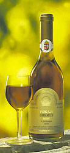

Am 25. Tag des
Monats Kislev wird weltweit das Lichterfest Chanukka
gefeiert. In diesen Tagen erinnern sich die Juden an die wunderbare
Rettung Israels im sog. Makkabäer Aufstand im Jahre 165 v.Chr. Judas
Makkabäus und seine vier Brüder besiegten damals die griechische
Syrer Dynastie der Seleukiden. Ein Jahr später wurde der
zwischenzeitlich gereinigte, von den griechischen Götzen befreite
Tempel neu eingeweiht und die obersten Rabbiner begannen mit der
Niederschrift der Bibel, dessen ältere Teil, das Alte Testament die
Geschichte des jüdischen Volkes ist. Soweit man die bekannten
Legenden zusammenfassen konnte, befindet sich die Welt demnach im
ausgehenden 6. Jahrtausend. Neulich fand man den Stein Moses in der
Wüste und stellte erstaunt fest, der sei um 1.500 Jahre jünger als
beschrieben und seitdem schweigen die Gelehrten über diesen Fund.
Unzählige steinerne Dokumente aus Mesopothamien wurden in das Alte
Testament als eigene Geschichte übertragen, als wenn die Juden damit
zu tun hätten. Solche Beweise läßt man zur Zeit von Islamisten
vernichten, aber auch darüber schweigt man.
Wie auch immer, bei der Neueinweihung (=Chanukka) des Tempels sollte
dieser beleuchtet werden. Dafür fand man nur soviel Öl, das nur einen
Tag lang brennen konnte. Es geschah jedoch ein Wunder und die Flamme
brannte 8 Tage lang. Zur Erinnerung daran besitzen alle jüdische
Familien einen achtarmigen Kerzenständer, dessen Kerzen nur zum
Chanukkafest entzündet werden dürfen, täglich eine Kerze mehr, bis
alle 8 Kerzen brennen.
Wichtig ist bei allen jüdischen Küchenprodukten, dass
das verarbeitete Material und auch die Verarbeitungsmethode
koscher sind. Dabei bedeutet koscher sowas wie passend oder zulässig.
Qualitativ hochwertige Zutaten
werden verwendet, bei denen man nichts beanstanden kann, unabhängig davon, ob der Gast den
Qualitätsunterschied merken kann oder nicht. So rührt man möglichst
koscheren Weißwein statt Wasser in den Kochtopf oder in den Kuchenteig und jeder Koch versucht
sein Produkt noch mit seinem eigenen i-Tüpfelchen zu bereichern. Wer
dann am Tisch herausschmecken kann, ob der Wein tatsächlich koscher
war oder nur Wasser, verdient mindestens eine silberne Zitrone.
Schalet / Sólet
Wird auf Deutsch unterschiedlich
geschrieben, so Tscholent, Cholent u.a. Die Bezeichnunng entstammt
aus dem französischen "chaud lit".
Unter den traditionellen jüdischen
Gerichten ist Schalet an erster Stelle zu nennen. Religiöse
Vorschriften führten zur Entwicklung der Rezeptur für ein nicht nur
von Juden
beliebtes Gericht. Schalet
ist ein Wort französisch-jiddischen Ursprungs für Bohnentopf oder
Bohnengulasch mit Rindfleisch, davon immer Beinscheibe und Brust, geräucherte Gänsekeule u.a.
Es gibt
auch regionale Varianten von Schalet. Während der ursprüngliche, auf
jüdische
Tradition basierende Schalet mit dem bayerischen Bohnengulasch mit Schweinshaxe
zum Verwechseln ähnlich ist, kennt man im
Badisch-Hessisch-Elsässischen Raum Kartoffel- und Apfelschalet, die
in dieser Region von Christen und Juden gleichermaßen gerne verzehrt
werden, aber völlig andere Rezepturen haben. Kartoffel- und
Apfelschalet haben keinen religiösen Hintergrund.
Der
jüdische Schalet ist ein beliebter Bohneneintopf, dessen besondere
Zubereitungsmethode den Genuß einer köstlichen warmen Mahlzeit ohne
Arbeit am Sabbat ermöglicht. Er wird traditionell in einem größeren
Topf aus Steingut zubereitet. Dabei wird die Vorschrift von Moses
berücksichtigt, nachdem man am Sabbat kein Feuer anzünden und zudem
nicht arbeiten darf. Beide Vorschriften werden eingehalten, indem das Feuer unter dem Bohnentopf
bereits am Freitag angezündet wird und man das Essen nach
einer bis zu 12stündigen Backzeit zur Mittagszeit am
Sabbat servieren kann. - Üblicherweise reichen 3-4 Stunden im
Backofen, aber einen Bohneneintopf kann man bei geringer Wärme
länger köcheln lassen. Je öfter der Topf erwärmt wird, umso besser schmeckt
das Essen - wie auch die warmen Krautgerichte
Szegediner Gulasch und Gefülltes Kraut bzw. Kohlroulade der
Ungarn. Da nicht jeder einen Steinofen besitzt und der Schalet lange
warm bleiben soll, entstand eine Methode bereits im
Mittelalter,
indem man das fertige Gericht samt Steingut in dicke Bettdecken
wickelte. So blieb das Essen lange warm, u.U. köchelte sogar weiter
und blieb mindestens bis Mittag ofenwarm. Durch die lange Kochzeit
schmeckt der Schalet einmalig gut. In seiner Begeisterung
beschrieb der Dichter Heinrich Heine im Jahre 1851 in seinem Vers Prinzessin Sabbat
folgendes:
"Schalet, schöner Götterfunken, Tochter aus Elysium!"
....siehe weiter dort.
Das jiddische Wort
Schalet stammt keinesfalls aus der synonym klingenden Ober- oder Unterschale des
Rindes. Es entstammt aus dem
französischen Begriff "chaud lit" für dieses Gericht, das warmes Bett bedeutet.
Gemeint war
damit dieses in einem warmen Bett fertiggekochte Bohnengericht. Die französische Bezeichnung
wurde bis ins 10. Jahrhundert nachgewiesen.
Über die Art und Weise der Zubereitung streiten sich vor allem
die religiös besonders gelehrten Juden. Viele entwickeln laufend neue
Theorien, was koscher sein soll bei der Zubereitung von Schalet.
Während die einen das zum Einweichen der Bohnen benötigte Wasser
mitkochen, andere bestehen darauf, diese geschmackgebende
Flüssigkeit unbedingt zu entsorrgen, weil diese Strassenstaub
enthalten könnte und das sei nicht rein. Dabei denken diese nicht
soweit, dass die Bohnen vor dem Einweichen womöglich gewaschen werden. Dummheit
und Wissenspantscher treffen aneinander nicht nur bei dieser Frage.
Es gibt sogar Oberkluge, die eine bestimmte Farbe der Bohnen
ablehnen oder auf die Verwendung von Paprikapulver unter den Zutaten
bestehen, weil das traditionell sein soll. Da stellt sich die Frage,
wo war Paprika in der vorkolumbianischen Zeit, als die traditionelle jüdische Küche
mit dem Schalet schon Bestand hatte. Ein weiterer Anlaß zur
Streitigkeit gibt die Menge der verwendeten Kochflüssigkeit. Die
einen mögen eine Suppe, andere eher einen schweren Eintopf.
Letzterer hat den Vorteil(?), dass man danach mindestens eine Woche
lang keinen Schalet mehr sehen kann. Im Allgemeinen gilt: als Gast
sollte man niemals Kritik über das Essen ausüben, weil schon ein
altes Sprichwort besagt: "Schalet wird dem Gast entsprechend
zubereitet!"
Auch wenn die Zutaten nicht alle koscher
sind, es ist das
beste Video über die Zubereitung von Schalet, das wir für die
Demonstration bei YouTube
finden konnten. Die Zutaten und die Zubereitung eines koscheren
Schalets beschreiben wir unter dem Video:
Zutaten: 500 g weiße
Bohnen, 500 g bunte Bohnen, 250 g Gerstengraupen, 2 große Zwiebeln,
5-10 Knoblauchzehen, 3 Lorbeerblätter, 2 Beinscheiben vom Rind, 1 kg
Rinderbrust, 2 geräucherte Gänsekeulen, 2 geräucherte
Truthahnkeulen, 5 Eier, 5 EL Gänseschmalz, Salz, Pfefferpulver.
Zubereitung: Die Bohnen waschen, die bunten
Bohnen 12 Std. vor dem Kochen in Wasser legen. Zwiebeln in grobe Scheiben
schneiden, in Gänseschmalz leicht schmoren, direkt im Kochtopf. Nun
kann man alle Fleischstücke im Topf leicht anbraten. Die bunten
Bohnen mit dem Weichwasser zusammen darüber gießen, die weißen
Bohnen, Gerstengraupen darüber streuen. Die zerdrückten
Knoblauchzehen und die Lorbeerblätter dazugeben. Wer den Bohneneintopf
besonders lange backt, kann das Fleisch ohne Anbraten über die
Bohnen und Gerstengraupen verteilen. Beinscheiben, Rinderbrust und die
geräucherten Geflügelschenkel werden obenauf verteilt. Leicht salzen
und pfeffern. Mit Salz muss man vorsichtig sein, denn die
geräucherten Geflügelschenkel schon reichlich Salz liefern. Den Topf
mit soviel Wasser auffüllen, dass alles bedeckt wird. Zuletzt gibt
man die gründlich gewaschenen Eiern in ihren unversehrten Schalen
darüber. Deckel darauf und ab in den Steinofen. Die Zutaten darf man
nicht umrühren, sonst platzen die Bohnen. Stattdessen kann man den
Topf gelegentlich schütteln. Wer kein Steinofen hat und 10-12 Stunden lang
köcheln will, wählt 80°C Ofentemperatur, prüft und füllt
gelegentlich die Flüssigkeit nach. Erfahrene Schaletköche wissen
schon im Voraus, wieviel Kochflüssigkeit die Bohnen im Ofen
benötigen.
Foie Gras,
Gänseleber / Libamáj
...gemeint ist
stets die Stopfleber, ein wichtiger Wirtschaftsfaktor in Ungarn.
Gänseleber-Angebot in der Großen
Markthalle von Budapest. Das Sortiment am Bild links ist bei
Touristen aus Frankreich begehrt, vor allem wegen der günstigen
Preise. Frische Gänseleber bekommt man hier ebenso, dazu
empfehlen wir jedoch eine andere Markthalle, die Lehelpiac genannt
wird. Dort ist man am Rande des jüdischen Stadtviertels
"Újlipótváros" und die Ware ist nicht nur am frischesten, sondern
deutlich preisgünstiger, als in der von Touristen überfüllten
Großen Markthalle.
Man findet unzählige Beschreibungen für
die Zubereitung der Gänseleber im Internet und in Kochbüchern. Wir
haben schlechte Erfahrung damit und können bestätigen, dass sie
meistens voneinander abgekupfert werden und so sicherlich nicht
funktionieren. Den besten Tipp bekamen wir von einem Geflügelmetzger
in der Markthalle "Lehel Piac" in Budapest und von Tante Klári und
Onkel Bruno, die gerade da waren, als wir dem Metzger zuhörten. Im
Gegensatz zu den komplizierten Beschreibungen ist demnach die
Zubereitung viel einfacher.
Wichtig beim Kauf
von Gänseleber ist, dass man gewichtsmäßig die gleiche Menge
Gänsefett, vorzugsweise Gänseflohmen dazu kauft, weil die Leber im
frischen Gänseschmalz gebraten werden soll. Man kann zwar
Gänseschmalz für die Zubereitung kaufen, aber darin gebraten
schmeckt die Leber nicht so gut. Wer Gänsegrammeln auf der
Brotzeitplatte mag, soll sich noch mehr Flohmen besorgen und
darunter auch welche mit der Haut zusammenhängen. Solche Grammeln
sind besonders knusprig.
Zubereitung:
Das Gänsefett wird in 2 bis 4 cm große Würfeln geschnitten, bei
möglichst geringer Hitze ausgeschwitzt und so in Gänseschmalz und Grammeln
getrennt.
Gänsegrammeln - Die
Grammeln sind ein Kapitel für sich, eine Delikatesse auf der
Brotzeitplatte. Wer sie mag, soll diese nach dem Ausschwitzen nicht
auspressen oder nur ein bischen zudrücken. Man kann zu Ende des Ausschwitzens sehr wenig Wasser
dazugeben, damit die Grammeln knusprig werden. In diesem Fall sollte
man das Fett nach dem Ausschöpfen der Grammeln etwas länger köcheln
lassen, damit das Wasser verdampft. Bei dieser Methode des
Knusprigbratens mit Wasserzugabe besteht die Gefahr, dass das
Gänseschmalz "verbrennt", danach verbrannt riecht und daher
ungeeignet ist für die Zubereitung der Gänseleber. Besser ist daher,
wenn man die Grammeln aus dem Fett schöpft und sie in einer Pfanne
knusprig brät. Dazu soll man die Grammeln mit einem Bratwender ein
wenig platt drücken, damit diese im eigenen Fett anrösten. Ideal
sind die Grammeln, wenn sie beginnen, eine bräunliche Farbe
anzunehmen. Ausgekühlt gehören sie auf die Brotzeitplatte, wie die
Gänseleber selbst. Wer die Grammeln nicht verzehren will, kann mehr
Fett daraus pressen und sie z.B. bei der Zubereitung von
Grammelnpogatschas verwenden.
Gänseleber
- Das Schmalz wird zuerst ausgekühlt und gehört in den Kühlschrank.
Die Gänseleber wird mit dem ausgekühlten
Gänseschmalz zusammen in einem Topf behutsam erwärmt. Man nimmt dazu soviel Fett, dass die
Leber davon immer bedeckt bleibt. Das Fett soll nun langsam köcheln
und wenn man denkt, bald ist es soweit, überprüft man gelegentlich den Bratfortschritt, indem man einen
Zahnstocher tief in die Leber sticht. Tritt dabei keine rosafarbene
Flüssigkeit mehr aus der Leber, überprüft man sicherheitshalber auch
die Unterseite mit dem Zahnstocher. Bleibt der Zahnstocher trocken,
ist die Leber fertig gebraten.
Unser Serviervorschlag: Authentisch
wird die Gänseleber auf einer Brotsscheibe kräftig gesalzen und so
verzehrt. Auf der Brotzeitplatte serviert man
zu Gänsegrammeln und auch zur Leber am besten lila Speisezwiebeln,
Tomaten
oder Schnittlauch, diesen am besten in Quark verrührt. Wir empfehlen
dazu einen kräftigen Merlot aus Szekszárd, aus dem gleichnamigen
Weinbaugebiet.
Vermerke
zur Gänseleber
Würzmittel - Oft wird in den Rezeptbüchern
empfohlen, beim
Ausschwitzen des Gänseschmalzes oder beim Braten der Gänseleber das
Schmalz mit Zwiebel, Knoblauch, Salz oder Paprikapulver zu würzen. Wir
müssen davon abraten. Einerseits wird aus diesen Würzmitteln kein
Geschmack in die Gänseleber übergenommen, andererseits besteht die
Gefahr von unangenehmen Verunreinigungen, wodurch das Gänseschmalz
verdirbt.
Koscheres Essen/Halali Fleisch
- Es wird in der jüdischen Litratur oft empfohlen, die Gänseleber
vor dem Braten für einige Stunden in Milch zu legen, damit diese evtl.
noch vorhandenes Blut aus der Leber zieht, aber die Milch bleibt
erfahrungsgemäß immmer weiß von den Lebern, die
man am besten in der Markthalle "Lehel Piac" direkt an der
U-Bahnstation "Lehel tér" in Budapest kauft, in
der Nähe des Westbahnhofes, am Rande des jüdischen Stadtviertels
"Újlipótváros" bzw. Neuleopoldstadt.
Leberpastete - Aus der Gänseleber kann man diverse Pasteten herstellen, worauf
wir hier nicht eingehen möchten. Dabei stellt sich die Frage, ob
sich diese Arbeit lohne. Es lohnt sich in vermeidlich vornehmen
Restaurants, wie
Gundel im Stadtpark von Budapest, wo zahlungskräftige Gäste
begeistert sind, wenn man die Gänsepastete mit Malossol Kaviar toppt, evtl. noch etwas Honig darauf tröpfelt
und dazu einige, möglichst ausgefallene Sorten von Marmeladen
serviert. Üblicherweise wird ein Rotwein zur Gänseleber empfohlen,
aber Gundel wäre nicht kulinarisch, wenn man dort nicht einen weißen
Tokajerwein oder Champagner dazu empfiehlt. Die Arbeit für die
Pastetehnherstellung lohnt sich nicht,
wenn man zuhause oder in der Jagdhütte die Zeit für einen Vergleich hat, ob jemand die
Pastete von der billigsten Kalbsleberwurst aus dem Supermarkt
unterscheiden kann. Sowas kommt schon vor, wenn man nach dem
Erklingen von Gänsejagd vorbei die Gläser auf den Jagdkönig erhebt,
anschließend ein Leberwurstbrot mit Walnüssen toppt
und darauf Honig tröpfelt....
Brot - Wenn man die Literatur darüber liest, was für welche Brotsorten
zu Gänseleber passen, dann staunt man nicht zufällig. Es werden alle
Brotsorten genannt mit dem Motto, Hauptsache nichts
vergessen! Ob die Leber kalt oder bei Zimmertemperatur serviert werden
soll, auch darüber machen sich viele Gedanken. Dabei wird die Gänseleber
sogar schnitzelartig paniert und in allen Varianten warm bis
heiß in den Restaurants angeboten, beispielsweise auf einer
Grillplatte bei
Vörös Postakocsi (Rote Postkutsche) in der Ráday utca in
Budapest.
Getränke zur Gänseleber und -pastete -
Ein prickelnder Traminer, Welsch- oder Rheinischer Riesling,
Chardonnay oder für Schleckermäulchen ist ein Lindenblatt zu
empfehlen.
Ob es eine geschäftliche Zusammenarbeit der Weinhändler und
Gastronomen gibt, diese Frage wirft sich schon auf, wenn in den
Weinkellern im
Tokajer Weinbaugebiet und weit darüber hinaus immer-wieder Gänseleber zum Aszu bzw.
Ausbruchwein empfohlen wird, diese Frage wirft sich schon auf
- mehr darüber siehe hier ganz unten.
Nach
all dem Wissenswertes über Foie Gras zeigen wir ein Hausrezept,
das von den oben genannten Tipps insofern abweicht, dass bei der
Zubereitung Salz, Paprikapulver, Knoblauch verwendet wird - eine
riskante Methode, wie aus unserer Anleitung hervorgeht:
Foie Gras Confit / Libamáj zsírjában
Zum Vergleich zeigen wir hier
eine andere Methode für die Zubereitung von Stopfleber:
Foie Gras Confit / Kacsamáj zsírjában
Zum Vergleich zeigen wir hier
eine Methode zum Einlegen der normal gewachsenen Entenleber
im eigenem Fett:
Kalbsschnitten mit Gänseleber gefüllt / Libmájjal töltött
borjúszelet
Zutaten: 10
handtellergroße Kalbsschnitzel, 200 g Gänseleber, 2 Zwiebeln, 4
Paprikaschoten, 1 Ei, 5 EL Mehl, 150 g Fett, 100 ml Milch, 200 ml
Sauerrahm, 100 ml Sahne, 4 TL Gewürzpaprikapulver, 1 TL
Pfefferpulver, 1 Prise Majoran, 20 g Salz.
Zubereitung: 1/2 Zwiebel kleingehackt in wenig Fett
dünsten, zerkleinerte Gänseleber zugeben, mit Salz, Pfeffer und
Majoran würzen, mit 1 EL Mehl bestreuen und leicht anbräunen. Mit
Milch auffüllen, mehrmals aufkochen und durch ein Sieb pressen.
In die Kalbsschnitzel Taschen schneiden. Die gedünstetee
Gänseleber abschmecken, dasrohe Ei zugeben und die Schnitzel mit der
Farce füllen. Die Taschen mit Rouladennadeln schließen. Die
Schnitzel in heißem Fett anbraten und zur Seite stellen.
Paprikasauce: In einer Bratpfanne im restlichen
Fett die restlichen Zwiebeln fein hacken und im Fett glasig dünsten,
mit Gewürzpaprikapulver vermengen, mit 300 ml Wasser auffüllen,
salzen und aufkochen. Die gefüllten Schnitzel einzeln zugeben und
langsam schmoren lassen, dabei die Pfanne öfter schütteln. Die
Schnitzel aus der Pfanne nehmen, die Rouladennadeln entfernen und
warm halten.
Die Paprikaschoten in 1 cm Quadrate
schneiden, zum Sud in der Pfanne geben, ca. 10 Minuten lang dünsten,
abschließend den Sud mit Sauerrahm und Sahne andicken und nach dem
Aufkochen erneut abschmecken. Die Sauce in einem Servierkännchen auf
dem Tisch bereitstellen.
Servieren:
die Schnitzel schräg in 2-3 Stücke aufschneiden und mit der
Paprikasauce übergießen. Als Beilage kommen Spätzle, Nokedli bzw.
Knobben, gekochte Petersilienkartoffeln, ein Blatt- oder Krautsalat
in Frage.
Getränksvorschlag:
Welschriesling, Traminer, Lindenblatt, Portugieser oder Kadarka.
Jüdische Eier / Zsidó tojás
Das Gericht soll koscher sein durch die
Verwendung von Gänsefett, ansonsten ist es identisch mit den
gefüllten Eiern, die man kleinwürfelt und in Deutschland gerne mit
Mayonnaise garniert - siehe unter Kalte
Küche.
Zubereitung: Die
Eier hart kochen, abschälen und klein würfeln oder mit der Gabel
zerdrücken. Zwiebel klen hacken oder reiben. Die restlichen
Zutaten dazu mischen.
Tipps:
Die Mixtur soll ca. 1 Std. lang im Kühlschrank reifen, danach mit
Senf und Salz erneut abschmecken. Im Video wird berichtet, dass
das Rezept von Haus zu Haus mit unterschiedlichen Zutaten
bereichert wird, wie Gänseleber, Gänsegrammeln, neulich kommen
Petersiliengrün, Muskatnuß- und Paprikapulver in Mode.
Bagels /Bagel
Bagels sind gelochte Mohnbrötchen, eine
in Schlesien erkorene jüdische Spezialität, die frisch und mit
einer Schmiere versehen, so wie im folgenden Video vorgeführt, eine
besondere Köstlichkeit aus jüdischen Bäckereien ist. Das Brötchen
wird im Steinofen genauso hergestellt, wie unsere deutsche Brötchen noch in den 1970er Jahren, als die Bäckereien die
Steinöfen abgeschafft hatten und seitdem das Backen nur noch in
Dampkesseln vortäuschen, wodurch das Kruspige nur noch auf eine
dünne Oberfläche reduziert wird.
Das
Bagelsrezept wurde nicht nur nach Ungarn, sondern auch in die Neue
Welt mitgebracht. Es gilt unter Juden als jüdische Spezialität aus
Schlesien.
Das gelochte Brötchen mit
Sesamkörnern am Bild links kaufen wir gelegentlich seit Jahren von
einem türkischen Bäcker in Hamburg. Er bezeichnet diese Brötchen
als Sesamring und verkauft auch Mohnringe, die mit Mohnkörnern
belegt genauso aussehen, wie die Bagels. Er verwendet Trockenhefe
und mischt keine Milch dazu. Da bleibt noch die Frage offen, ob
die mit Mohnkörnern belegten Bagels tatsächlich in Schlesien
erfunden worden sind oder die koscheren Bäcker sich mit
fremden Federn schmücken?
Falafel
Falafel wurde den 1920er Jahren in Israel
von den Arabern abgekupfert und gehört dort immer öfter an den
jüdischen Festtagstisch. In New York und Berlin weit verbreitet
unter den Juden, eröffnen sich laufend neue Falafelläden auch in
Budapest, die von Arabern, aber auch von Juden geführt werden.
Rezept demnächst hier
Fluden / Flódni
Das Wort Fluden entstammt aus dem deutschen Begriff für
Fladen, hat einen jiddischen Ursprung und daraus ging in
Ungarn das Wort Flódni hervor. Nicht zu übersehen ist, dass es sich
dabei um eine nicht aufgerollte, auf dem Backblech flach
ausgebreitete, reicher belegte Variante des ungarischen Beigli bzw.
Wiener Stolle handelt.
Koscher sein soll der Fluden mit Pflaumenmus in der
unteren Schicht, aber
so genau sieht man das heute nicht immer. Der
untere Kuchenboden wird oft mit Aprikosenmarmelade, bei den
Ausgewanderten im Übersee meistens mit Apfelkompott belegt. Eine Regel
oder Vorschrift gibt es für diese Torte nicht, die Reihenfolge von
4 bis 5 Tortenböden und Belägen folgen dem aktuellen Gutdünken des
Kuchenbäckers.
....So bekommt man
Flódni im
Konditoreicafé Sommer in Budapest. Die Füllungen von unten:
Walnuß, Mohn, Kompott, Apfelmus.
Am ersten Abend des Chanukkafestes gehört
der Fluden auf den Tisch im osteuropäischen Raum, aber auch zu
besonderen Anlässen wird er aufgetischt, wie am Bild links zum
Geburtstag. Dieses Bild erklärt zugleich, warum Fluden trotz
Blechkuchenform als Torte bezeichnet wird. Er wird in
Ungarn in der Tat gelegentlich tortenförmig rund zubereitet, so
spricht man immer von einer Torte.
....und so liefert
das
Konditoreicafé Sommer in Budapest Fluden zu besonderen
Anlässen, wie hier zum Geburtstag.
Der Ursprung des
Fludens liegt in der
Wiener Stolle bzw. das Beigli. Das Rezept ist identisch, die
Zutaten im Fluden sind jedoch reichhaltiger/wertvoller und man
achtet darauf, dass alle Zutaten koscher sind.
Fluden unterschiedet sich von Beigli, indem: 1. die Rolle
fladenförmig gebacken wird - daher die Bezeichnung Fladen bzw.
Fluden auf Jiddisch oder Flódni auf Ungarisch. 2. Da
Milchprodukte gemieden werden, wird Butter steets durch Margarine
oder anderes Fett ersetzt, ebenso der Sauerrahm. Alle anderen
Zutaten, die im Grundrezept von Beigli vorkommen, findet man im
Fluden genauso. Fluden wird immer reichlich belegt, stark gesüßt.
Beigli wird selten so süß
zubereitet, wie Fluden. Der Teig von Flódni enthält mehr Margarine, Zucker
und zusätzlich feine Würzmittel, Honig und evtl. auch noch
Weißwein. Die einzelnen Füllungen im Fluden werden so stark
gesüßt, bis es noch süßer nicht mehr geht. Manche jüdische
Kuchenbäcker übertreiben die Süße in den Konditoreiprodukten so
sehr, dass ihr Konditoreicafé von vielen gerade deswegen gemieden
wird.
Zu
Weihnachten gehört in Ungarn bei den Christen Beigli auf den Tisch,
gleichzeitig zu Chanukka kommt Flódni bei den Juden auf den Tisch. - Da bleibt nur
noch die Frage offen: wer hat da bloß von wem was
abgekupfert?
Das folgende Video soll eine
koschere Vorbereitung zeigen - Zutaten und Zubereitung siehe
darunter:
Zutaten für den Teig: 600
g Strudelmehl, 250 g Margarine, 200 g Zucker, 4 Eier, 2
cl süßer Weißwein, 2 Hefewürfel, 1 Ei zum Bestreichen.
Obstfüllung: 200 g Pflaumenmus oder
Aprikosenmarmelade.
Walnussfüllung:400 g
geriebene Walnüsse, 100 g Zucker, Saft einer halben Zitrone, Saft
einer halben Orange, 1 Batzen Rosinen, 1 Beutel Vanillinzucker, 1 TL
Zimt, 2 cl Rum, 200 g Aprikosenmarmelade.
Mohnfüllung:400 g
weichgemahlener Mohn, 100 g Zucker, 2 cl süßer Weißwein oder Wasser,
Saft einer halben Zitrone, Saft einer halben Orange, 1 Batzen
Rosinen, 1 TL Zimt, 2 cl Rum, 2 EL zerlassene Margarine, 1 Eiweiß
aufgeschlagen. Zuerst wird der gemahlene Mohn im Wein etwas
vorgekocht und anschließend mit den genannten Inhaltsstoffen
gemischt.
Zubereitung: Hefe
im lauwarmen Wasser auflösen und auf einer warmen Stelle gehen lassen.
Die Zutaten für die Kuchenböden zu einem glatten Teig kneten und 1
Std. lang ruhen lassen. Währenddessen die einzelnen Füllungen
zubereiten, indem die genannten Zutaten vermischt werden.
Backen: Den Teig in 5 Stücke teilen, einzeln auf Backblechgröße
ausrollen. Die einzelnen Teigschichten mit den genannten Füllungen
in der genannten Reihenfolge belegen. Die obere Teigplatte wird mit
einer Mischung aus 1 Ei und Zuckerwasser bestrichen. Bei 180°C ca.
40 Minuten lang goldgelb backen.
Vermerk: richtig koscher sein soll der Fluden,
wenn der gemahlene Mohn und auch die gemahlenen Walnüsse in je 200
ml koscheren Weißwein vorgekocht und danach mit den genannten
Würzmitteln gemischt werden, aber das Rezept entwickelt sich und
seit geraumer Zeit ist Orangensaft - möglichst aus
Jaffa - auf dem Vormarsch.
Getränke / Italok
Mit der Bestätigung von einem Rabbi über
die Eignung der verwendeten Zutaten und der Zubereitungmethode wird
das Lebensmittel koscher. Wenn Getränke auf den Etiketten als
koscher deklariert werden, kann man davon ausgehen, dass ein Anteil
vom Verkaufspreis für die Unterstützung Israels gespendet wird.
Ähnlich ist es mit Lebensmitteln, wenn diese als koscher angeboten
werden.
Bei allen jüdischen Spezialitäten wird ein
Unicum vorher und ein Tokajer Wein dazu empfohlen. Das betrifft
die gesamte jüdische Gastronomie in Ungarn und weltweit genauso.
Stets werden diese Spezialitäten als ideale Ergänzung empfohlen unabhängig davon, was man bestellt. Ob süß, sauer, fett,
Vorspeise, Hauptgericht, Nachspeise, vegetarisch - völlig egal,
immer ein Unicum und auch noch ein Tokajer Wein soll passend sein.
"Das ist ein Unikum!" soll der
ungekrönte Kaiser und Sohn der Maria-Theresia im Jahre 1790 gesagt
haben, als ihm sein Hofarzt Zwack seine Geheimmixtur mit
Heilkräutern reichte. Für diese Legende gab es nie einen Zeugen,
wird aber in allen Werbebroschüren der familiär geführten Firma
Zwack wiederholt. Fakt ist, dass der Kaiser Joseph II. damals
schon in seinem Sterbebett lag, keinen Besucher mehr empfing und
ihm von Medizinern ein stricktes Alkoholverbot verhängt wurde, was
ihn in Anbetracht seines gewöhnlichen Konsums besonders unangenehm
belastete. Kein Wunder über seine Freude, nachdem der Hofarzt seine Geheimmixtur an den
Aufpassern vorbeischmuggeln und ihm damit eine letzte Freude
machen konnte. Unicum ist ein Magenbitter aus über 40 Kräutern und
Wurzeln. Das besondere an Unicum ist ein Sprichwort, das in Ungarn
allgegenwärtig bekannt ist: "Davon kriegst Du keine Kopfschmerzen!"
und damit ist Unicum in der Tat einmalig auf dieser Welt. Viele
Kräuterschnäpse verursachen Kopfschmerzen, aber Unicum nicht, auch wenn
man den eigenen Maß nicht einhält. Vermutlich fehlt Wermuth unter
den verwendeten Kräutern und die Eichenfässer werden vor der
langen Lagerung nicht geschwefelt.

Ob es
eine geschäftliche Zusammenarbeit der Tokajer Weinhändler und
Gastronomen gibt, diese Frage wirft sich schon auf, wenn in den
Weinkellern im
Tokajer Weinbaugebiet immer-wieder Gänseleber zum Aszu bzw.
Ausbruchwein empfohlen wird, der neuzeitlich - trotz später Ernte
und zweimaliger Vergärung
wie eh und je -
heute nur noch ca. 10% Vol. Alkoholgehalt und eine wässrige Farbe hat. Früher hatte der Tokajer
Ausbruchwein nach 3-4jähriger Lagerung bis zu 16% Vol. Alc. Er war damals noch
zuckersüß, honiggelb und schwerflüssig, als man in Tokaj den Zusammenhang zwischen Gänseleber und Tokajer
Ausbruchwein erkannte, nachdem der Sonnenkönig ihn zur Königin aller
Weine ernannte. Irgendwas stimmt aber in letzter Zeit nicht mehr
in Tokaj. Wir vermuten den Einfluss zu vieler ausländischer
Spekulanten und womöglich die Entwicklung der Laboranalyse hinter dieser Entwicklung.
Zucker ist heute leicht nachweisbar. Der Name des Holzzellwand
zerstörenden Schimmelpilzes Botritis cinerea klingt vielleicht
magisch für diejenigen, die an den dazu geschriebenen Fabeln glauben, aber früher gab
es guten Ausbruchwein aus Tokaj auch ohne Botritis cinerea, sogar
viel besseren als heute mit. Nach
neuesten
Händlerangaben soll die
Rettungsarbeit als Kunst besonders wertvoll sein, die damit zusammenhängt, dass man den
Rebsaft der zur Fäulnis neigenden Schrumpftrauben der Sorte Furmint noch rettet und
möglichst in letzter Sekunde. Vielleicht verstehen wir wenig von
dieser Timingkunst, wenn
das ein Qualitätskriterium sein soll und nicht die Restsüße,
Weinsäure und
Alkoholgehalt....
Sie
wollen endlich mal ein Gulasch nach
Originalrezept in Budapest genießen. Dann nichts wie hin.
Das Essen in Ungarn ist fett und schwer, damit muss man einfach
rechnen, wenn man in Ungarn einen Urlaub macht.
Zur
ungarischen Küche
gehört nun mal das Schmalz. Als
Geschmacksträger
bringt es die Zwiebeln und den Paprika zur Geltung.
Es ist viel gesünder, als sogenannte
Ernährungsberater in Deutschland denken, denn
der Mensch kann die genetisch vorhandene Abwehrkraft
gegen den Krebs nur durch fettes Essen und viel Bewegung
stärken.
Niemand sagt, dass man viel essen muss!


 Sie
wollen endlich mal ein Gulasch nach
Originalrezept in Budapest genießen. Dann nichts wie hin.
Sie
wollen endlich mal ein Gulasch nach
Originalrezept in Budapest genießen. Dann nichts wie hin.